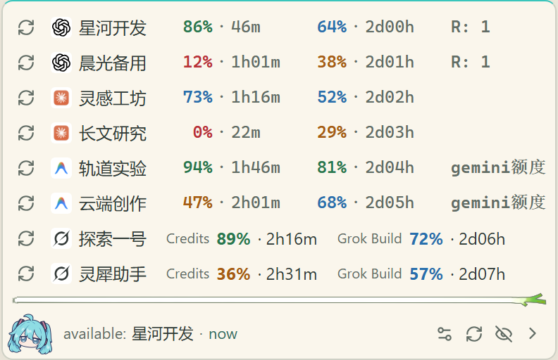
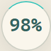
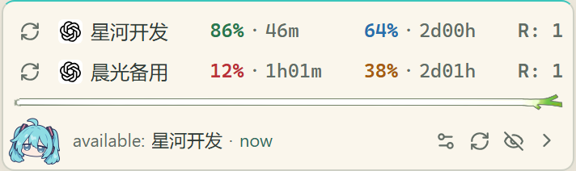
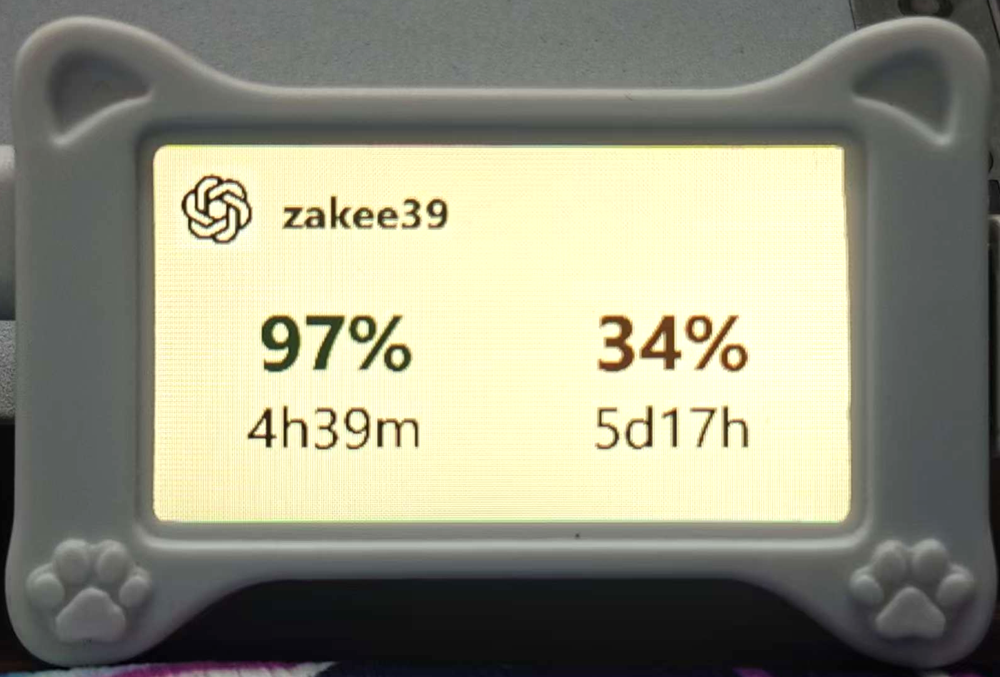
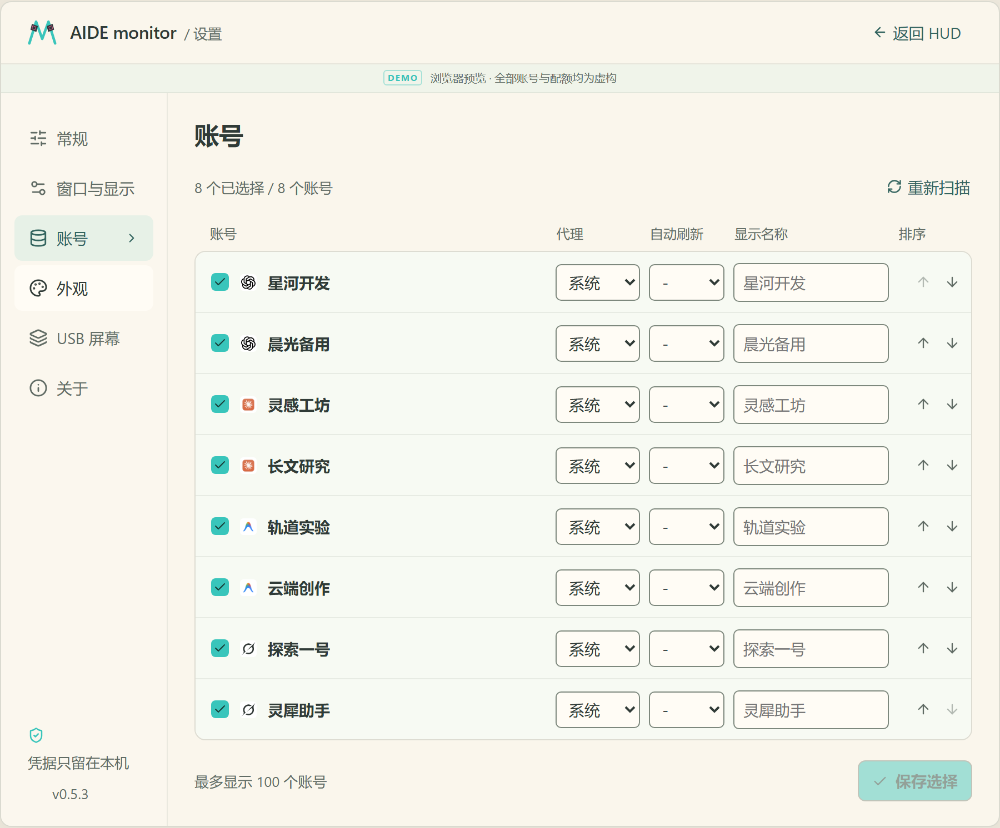

01 / A LITTLE MORE FOCUS
额度看得见，
专注不断线。
不用来回打开每个平台。
把 AI 账号的额度，轻轻放在眼前。
4大平台
Windows x64 · 桌面悬浮窗与独立监视屏一个小窗口多账号 · 剩余额度 · 重置时间

你的额度小伙伴。just a glance ♡

轻轻收起，重点还在。
02 / ALL IN ONE PLACE
四大平台，
一处查看。
哪个账号还有额度，什么时候重置。
看一眼，心里就有数。
短周期与周额度，各自清楚显示。

界面演示 · 账号与额度均为虚构清楚，不复杂。
03 / A SPACE OF ITS OWN
把额度，放到
独立小屏上。
工作留在主屏，额度自有位置。
一块桌面小屏，让状态随时可见。
01
独立主题 · 自适应布局两项额度，左右并排账号数量不同，布局随之适应。

04 / MAKE IT YOURS
照你的习惯，
刚刚好。
想看哪些账号，多久刷新一次。
每一个小习惯，都有自己的位置。
01
每个账号，单独安排勾选展示 · 独立代理 · 刷新频率
02
舒服的窗口，顺手的设置置顶 · 位置锁定 · 隐私模式
是喜欢的样子呀 ♡

05 / READY WHEN YOU ARE
少一点查询，
多一点专注。
让额度清楚可见。
接下来，好好创作。